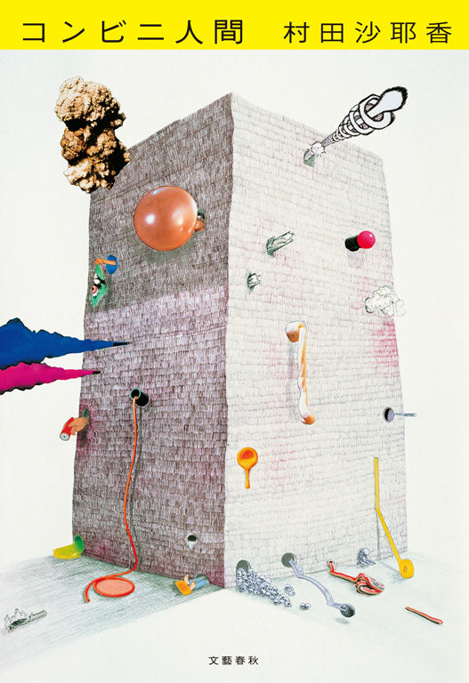

| コンビニエンスストア様【文春e-Books】 | |
| 村田沙耶香 | |
コンビニエンスストア様
村田沙耶香
コンビニエンスストア様
前文お許しください。貴方と出会って17 年ほどになりますが、こうしてお手紙を書くのは初めてのことですね。
貴方に出会ったとき、私は18 歳でした。当時の私には、貴方はとても怖い人に見えました。大人の世界の人に感じましたし、私なんてすぐに貴方のそばから追いやられてしまうかと思いました。貴方に会うときはいつもとても緊張していて、私はポケットに小さなメモ帳を入れて、貴方の細かい仕草やちょっとした癖などに気が付くたびに、びっしりと書き留めていました。
そんな私達がいつ恋人になったのか、きっと私にも貴方にもはっきりとは言えないでしょうね。強いて言えば、深夜の２時を初めて貴方と一緒に過ごしたあの夜でしょうか。あのときは急に他の人が来られなくなって、どうしてもと頼まれて、夜中まで貴方の中に残っていたのでした。いつも貴方に会うのは昼か夕方だったので、貴方の中に夏の夜の匂いがする空気が流れ込んでくるのを感じて、どきどきしました。
帰り際、ふと、貴方の困った顔が見たくなった私は、貴方にこう声をかけました。「コンビニエンスストアと人間って、セックスできると思いますか？」私は貴方が赤くなったり、戸惑ったりするだろうと思いました。けれど、貴方はさらりと答えました。
「何を言ってるんだい？ もうしてるじゃないか。君は毎日、僕の中に入ってる」
生真面目な顔で貴方がそう言ったとき、私たちは恋人同士になったのかな、と思います。
それから、私は仕事ではなくデートをしに、お洒落をして貴方に会いに行くようになりました。貴方も、雑誌の棚や店内の鏡をぴかぴかにして、少し気取って私を迎えるようになりました。
じっくり考えてみると、その理屈だと夜勤のおじさんとか店長夫婦とか何百人も来るお客様ともセックスをしていることになるのですが、貴方が当然のように、「え？ 僕は君としかこんなことをしたことがないよ」と言うので、きっと貴方の中では何か違いがあるのだろうと思っています。
貴方と出会って３年ほどしたときでしょうか。私が突然、貴方が１か月後に死んでしまうことを告げられたのは。
私は驚いて口もきけませんでした。コンビニエンスストアが３年で死んでしまうなんて、思ってもいなかったのです。
けれど、本当に貴方は死んでしまいました。貴方が死んでしまう前の２日間、貴方の中のものは全部半額になって売られ、大勢の人が買い漁って行きました。私はそれを見ながら、貴方にはもう二度と会えないと思いました。
だから、貴方が生きていた場所から自転車で15 分ほどの所に、新しく生まれ変わると店長から聞いたときには驚きました。コンビニエンスストアとお付き合いするのは初めてでしたが、こうして何度死んでも生まれ変わる性質だとは知らなかったのです。
生まれ変わった貴方と私はまた恋に落ちました。それから私がファミリーレストランと浮気をしたり、貴方がまた死んだり、いろいろありましたね。３回目に貴方が死んだときには私も慣れたものでした。別れと再会を繰り返し、17 年たった今も貴方の側にいます。
周りからは、「何でコンビニエンスストアと付き合ってるの？ 人じゃなくていいの？」「そんなに長く付き合っていて、飽きない？」などとよく言われます。「どうせ、本物の恋愛じゃない。小説のネタにするために付き合ってるんだろ」とも言われます。私は慣れてしまって何とも思いませんが、この前デートしているときに冗談交じりに言ったら、貴方は少し悲しそうな顔をしました。私は、「こんな話を聞かせてごめんね。言った人を殺してこようか？」と聞きました。半分冗談で、半分本気でした。「あんまりヒトを殺すのは、よくないよ。ヒトは僕と違って死んでも生き返らないから」と貴方は生真面目に答えました。
そういえば、貴方が感情を顔に出すのは珍しいですね。冗談を言っても貴方はあんまり笑ったりしませんし、突然寄りかかったりスキンシップをしても、赤面するわけでもなく、平然としています。それでも、貴方のことをどうして好きかなんて、言わなくても伝わっているものだと思っていました。なのにこの前、もう１００回目以上になる別れ話で延々と貴方と議論になったとき、貴方までもが、「君はどうして僕と付き合っているのか、未だにわからない」と言いましたね。
私はとてもショックでした。そして、貴方にわかってほしくて、それで、こうして筆をとったのです。
好きな所はいろいろありすぎて、原稿用紙が１００枚あっても足りないので、簡潔に理由を一つだけ述べます。
私が貴方を好きな一番の理由は、貴方が私を人間にしてくれたからです。
貴方はヒトではない、と皆は言いますが、貴方と出会うまで、ヒトではないのは私のほうでした。少なくとも、上手に人間ができる人間ではありませんでした。貴方の側にいることで、初めて、私は人間になったのです。
貴方が私に朝と昼と夜という時間の流れを与えてくれ、「現実」という世界を歩き回る不思議な靴をプレゼントしてくれました。私にとって貴方は魔法使いでした。貴方がいなければ私は「朝」という時間がこの世にあることすら感じられないまま生きていたでしょう。
貴方は私の人生で唯一の、揺るぎない「正常」でした。だから私の人間としての感情は、すべて貴方のものなのです。
随分と重い感情を伝えてしまって、ひょっとしたら私達は本当に別れてしまうのかもしれないですね。恋は私を人間という化け物にしてしまったのに、貴方はいつまでたってもコンビニエンスストアのままなのだから。膨らみすぎた私の愛情は貴方には重すぎるのかもしれません。
貴方を失うときのことを、考えます。私は貴方がいないと、人間であるということを、また忘れてしまうかもしれない。そんな風に貴方に依存していることが怖くもあります。
けれど、もう少しだけ、貴方のそばにいさせてください。貴方はあちこちボロボロだし、朝からピンポンピンポンうるさいし、「僕は建築物だから」と動こうとしないのでいつもデートは同じ場所だし、「手料理だよ」と出してくるものにはやたらと添加物が入ってるし、「みてみて！ 新しいこと始めちゃった！」といきなりコーヒーマシンを入れてみたりして苦労させるし、そもそも、やっぱり夜勤のおじさんやら店長やらを身体の中に入れて自由に蠢かしていて、あれは浮気なのではないかと怪しいし、欠点だらけな気もするのですが、その欠点こそが魅力だと思うのだから、私の恋は重症なのでしょう。なので、この病気が治るまで私の側にいるのが、貴方の義務だと思います。
明日の朝、また貴方に会いに行きます。最近はついついマンネリで同じジーンズばかり穿いたりしてしまっていましたが、明日は新品のワンピースで行きます。だから、貴方も業務用冷蔵庫の中まで掃除して、お洒落して待っていてくださいね。
そういえば、私達はキスをしたことがありませんね。明日が、初めてのその日になるのだと思います。 かしこ
平成二十六年十二月
村田沙耶香
村田沙耶香 （むらた・さやか）
１９７９年千葉県生まれ。玉川大学文学部卒業。２００３年「授乳」が第46 回群像新人文学賞優秀作となりデビュー。09 年『ギンイロノウタ』で第31 回野間文芸新人賞受賞。13 年『しろいろの街の、その骨の体温の』で第26 回三島由紀夫賞受賞。他の著作に『タダイマトビラ』『殺人出産』『消滅世界』などがある。
この電子書籍は二〇一六年二月十四日刊行の単行本『ラヴレターズ』より抜粋し制作しています。

コンビニエンスストア様
２０１６年７月２０日 発行
著 者 村 田 沙 耶 香
発行人 中部嘉人
発行所 株式会社文藝春秋
東京都千代田区紀尾井町３─２３
郵便番号 １０２─８００８
電話 ０３─３２６５─１２１１
〈ご注意〉
本作品の全部または一部を、著作権者ならびに株式会社文藝春秋に無断で、複製（コピー）、転載、改ざん、公衆送信（ホームページなどに掲載することを含む）することを禁じます。万一このような行為をすると、著作権法違反で処罰されます。
〈お断り〉
本作品を電子書籍化するにあたり、一部の漢字が簡略体で表示される場合があります。また、ご覧になる機種により、表示の差が認められる場合があります。
第１５５回（２０１６年上半期）芥川賞受賞作
『コンビニ人間』

36 歳未婚女性、古倉恵子。大学卒業後も就職せず、コンビニのバイトは18 年目。これまで彼氏なし。オープン当初からスマイルマート日色駅前店で働き続け、変わりゆくメンバーを見送りながら、店長は８人目だ。日々食べるのはコンビニ食、夢の中でもコンビニのレジを打ち、清潔なコンビニの風景と「いらっしゃいませ！」の掛け声が、毎日の安らかな眠りをもたらしてくれる。仕事も家庭もある同窓生たちからどんなに不思議がられても、完璧なマニュアルの存在するコンビニこそが、私を世界の正常な「部品」にしてくれる──。
ある日、婚活目的の新入り男性、白羽がやってきて、そんなコンビニ的生き方は「恥ずかしくないのか」とつきつけられるが......。
現代の実存を問い、正常と異常の境目がゆらぐ衝撃のリアリズム小説。